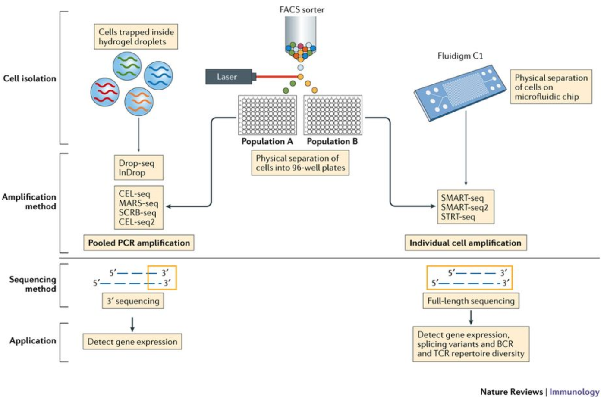
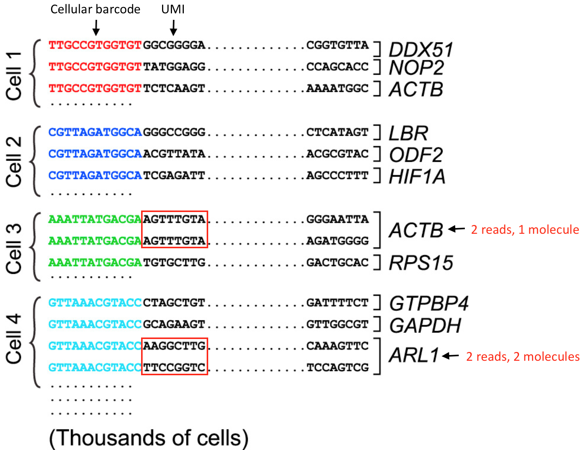
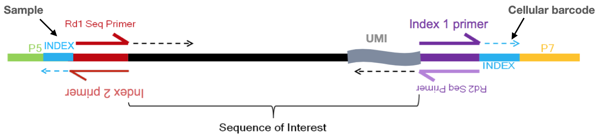
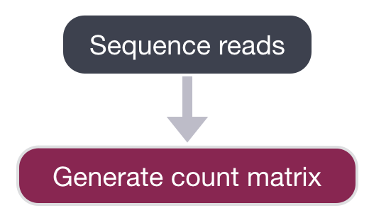
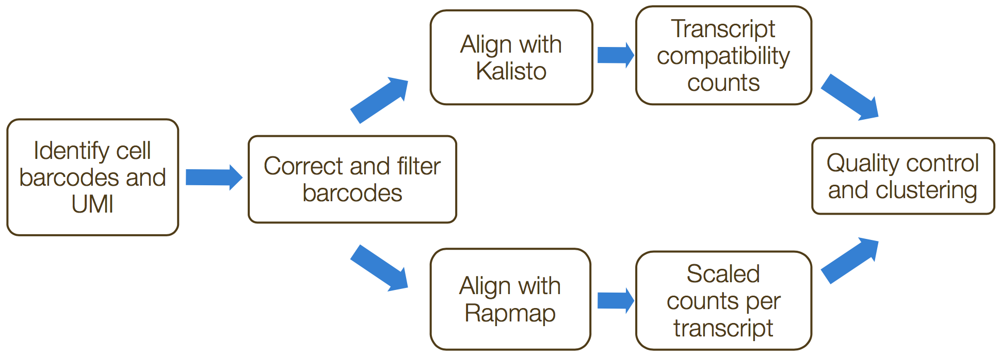

18 单细胞RNA测序—从raw data到count matrix
Depending on the library preparation method used, the RNA sequences (also referred to as reads or tags), will be derived either from the 3’ ends (or 5’ ends) of the transcripts (10X Genomics, CEL-seq2, Drop-seq, inDrops) or from full-length transcripts (Smart-seq).


Image credit: Papalexi E and Satija R. Single-cell RNA sequencing to explore immune cell heterogeneity, Nature Reviews Immunology 2018 (https://doi.org/10.1038/nri.2017.76)_
The choice of method involves the biological question of interest. The following advantages are listed below for the methods:
- 3’ (or 5’)-end sequencing:
- More accurate quantification through use of unique molecular identifiers (UMI) distinguishing biological duplicates from amplification (PCR) duplicates
- Larger number of cells sequenced allows better identity of cell type populations
- Cheaper per cell cost
- Best results with > 10,000 cells
- Full length sequencing:
- Detection of isoform-level differences in expression
- Identification of allele-specific differences in expression
- Deeper sequencing of a smaller number of cells
- Best for samples with low number of cells
Many of the same analysis steps need to occur for 3’-end sequencing as for full-length, but 3’ protocols have been increasing in popularity and consist of a few more steps in the analysis. Therefore, our materials are going to detail the analysis of data from these 3’ protocols with a focus on the droplet-based methods (inDrops, Drop-seq, 10X Genomics).
18.1 3’-end reads (includes all droplet-based methods)
For the analysis of scRNA-seq data, it is helpful to understand what information is present in each of the reads and how we use it moving forward through the analysis.
For the 3’-end sequencing methods, reads originating from different molecules of the same transcript would have originated only from the 3’ end of the transcripts, so would have a high likelihood of having the same sequence. However, the PCR step during library preparation could also generate read duplicates. To determine whether a read is a biological or technical duplicate, these methods use unique molecular identifiers, or UMIs.
- Reads with different UMIs mapping to the same transcript were derived from different molecules and are biological duplicates - each read should be counted.
- Reads with the same UMI originated from the same molecule and are technical duplicates - the UMIs should be collapsed to be counted as a single read.
- In image below, the reads for ACTB should be collapsed and counted as a single read, while the reads for ARL1 should each be counted.

Image credit: modified from Macosko EZ et al. Highly Parallel Genome-wide Expression Profiling of Individual Cells Using Nanoliter Droplets, Cell 2015 (https://doi.org/10.1016/j.cell.2015.05.002)_
UMI即（unique molecular identifier），是一段随机序列，每一个DNA分子都有自己的UMI序列。可以大大降低PCR误差（比如：原来两个样本中某基因表达量相同，但是由于两个样本扩增效率不同，样本1为99%，样本2只有95%，那么同时扩增40个循环，这同一个基因就有了0.99^40 / 0.95^40 = 5.2倍差异，因此本来没有差异也会因为外界因素扩增效率的影响而产生“假阳性”。
So we know that we need to keep track of the UMIs, but what other information do we need to properly quantify the expression in each gene in each of the cells in our samples? Regardless of droplet method, the following are required for proper quantification at the cellular level:

Image credit: Sarah Boswell, Director of the Single Cell Sequencing Core at HMS
- Sample index: determines which sample the read originated from
- Added during library preparation - needs to be documented
- Cellular barcode: determines which cell the read originated from
- Each library preparation method has a stock of cellular barcodes used during the library preparation
- Unique molecular identifier (UMI): determines which transcript molecule the read originated from
- The UMI will be used to collapse PCR duplicates
- Sequencing read1: the Read1 sequence (red top arrow)
- Sequencing read2: the Read2 sequence (purple bottom arrow)
18.2 Single-cell RNA-seq workflow
The scRNA-seq method will determine how to parse the barcodes and UMIs from the sequencing reads. So, although a few of the specific steps will slightly differ, the overall workflow will generally follow the same steps regardless of method. The general workflow is shown below:

Image credit: Luecken, MD and Theis, FJ. Current best practices in single‐cell RNA‐seq analysis: a tutorial, Mol Syst Biol 2019 (doi: https://doi.org/10.15252/msb.20188746)_
The steps of the workflow are:
- Generation of the count matrix (method-specific steps): formating reads, demultiplexing samples, mapping and quantification
- Quality control of the raw counts: filtering of poor quality cells
- Clustering of filtered counts: clustering cells based on similarities in transcriptional activity (cell types = different clusters)
- Marker identification and cluster annotation: identifying gene markers for each cluster and annotating known cell type clusters
- Optional downstream steps
Regardless of the analysis being done, conclusions about a population based on a single sample per condition are not trustworthy. BIOLOGICAL REPLICATES ARE STILL NEEDED! That is, if you want to make conclusions that correspond to the population and not just the single sample.
18.3 Generation of count matrix
We are going to start by discussing the first part of this workflow, which is generating the count matrix from the raw sequencing data. We will focus on the 3’ end sequencing used by droplet-based methods, such as inDrops, 10X Genomics, and Drop-seq.

After sequencing, the sequencing facility will either output the raw sequencing data as BCL or FASTQ format or will generate the count matrix. If the reads are in BCL format, then we will need to convert to FASTQ format. There is a useful command-line tool called bcl2fastq that can easily perform this conversion.
NOTE: We do not demultiplex at this step in the workflow. You may have sequenced 6 samples, but the reads for all samples may be present all in the same BCL or FASTQ file.
The generation of the count matrix from the raw sequencing data will go through similar steps for many of the scRNA-seq methods.

alevin is a command-line tool that estimates expression of scRNA-seq data for which the 3’ ends of transcripts were sequenced. umi-tools and zUMIs are additional tools that can perform these processes. These tools incorporate collapsing of UMIs to correct for amplification bias. The steps in this process include the following:
- Formatting reads and filtering noisy cellular barcodes
- Demultiplexing the samples
- Mapping/pseudo-mapping to transcriptome
- Collapsing UMIs and quantification of reads
If using 10X Genomics library preparation method, then the Cell Ranger pipeline would be used for all of the above steps.
1. Formatting reads and filtering noisy cellular barcodes
The FASTQ files can then be used to parse out the cell barcodes, UMIs, and sample barcodes. For droplet-based methods, many of the cellular barcodes will match a low number of reads (< 1000 reads) due to:
- encapsulation of free floating RNA from dying cells
- simple cells (RBCs, etc.) expressing few genes
- cells that failed for some reason
These excess barcodes need to be filtered out of the sequence data prior to read alignment. To do this filtering, the ‘cellular barcode’ and the ‘molecular barcode’ are extracted and saved for each cell. For example, if using ‘umis’ tools, the information is added to the header line for each read, with the following format:
@HWI-ST808:130:H0B8YADXX:1:1101:2088:2222:CELL_GGTCCA:UMI_CCCT
AGGAAGATGGAGGAGAGAAGGCGGTGAAAGAGACCTGTAAAAAGCCACCGN
+
@@@DDBD>=AFCF+<CAFHDECII:DGGGHGIGGIIIEHGIIIGIIDHII#Known cellular barcodes used in the library preparation method should be known, and unknown barcodes would be dropped, while allowing for an acceptable number of mismatches to the known cellular barcodes.
2. Demultiplexing sample reads
The next step of the process is to demultiplex the samples, if sequencing more than a single sample. This is the one step of this process not handled by the ‘umis’ tools, but is accomplished by ‘zUMIs’. We would need to parse the reads to determine the sample barcode associated with each cell.
3. Mapping/pseudo-mapping to cDNAs
To determine which gene the read originated from, the reads are aligned using traditional (STAR) or light-weight methods (Kallisto/RapMap).
4. Collapsing UMIs and quantification of reads
The duplicate UMIs are collapsed, and only the unique UMIs are quantified using a tool like Kallisto or featureCounts. The resulting output is a cell by gene matrix of counts:

Image credit: extracted from Lafzi et al. Tutorial: guidelines for the experimental design of single-cell RNA sequencing studies, Nature Protocols 2018 (https://doi.org/10.1038/s41596-018-0073-y)_
Each value in the matrix represents the number of reads in a cell originating from the corresponding gene. Using the count matrix, we can explore and filter the data, keeping only the higher quality cells.